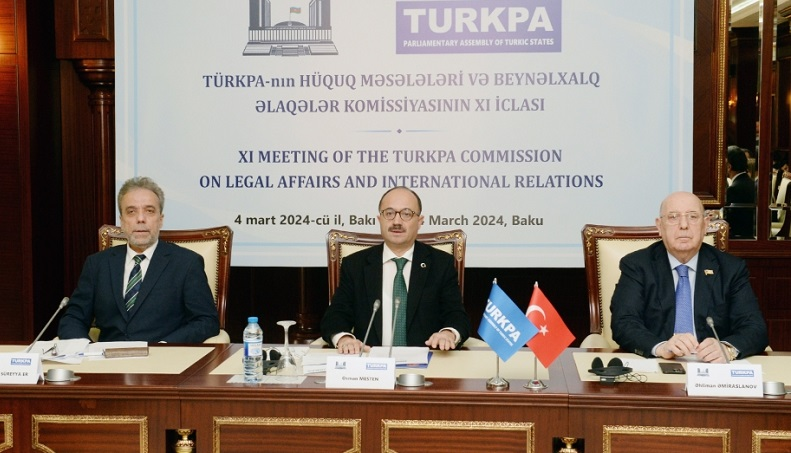

Azerbaijan's ombudsperson urges int'l community to exert pressure on Yerevan to hand over accurate minefield maps to Baku
Gafarova expressed confidence that the visit would contribute to further strengthening and expansion of bilateral ties between the countries, including between the parliaments.
The speaker stated that Azerbaijan and Bulgaria are friendly and strategic partner countries. The Joint Declaration on Strategic Partnership signed in 2015 brought the relations to a qualitatively new stage.
The Speaker of the Parliament emphasized the importance of mutual visits and high-level meetings.
At the meeting it was emphasized that cooperation in the energy sector plays a key role in the development of interstate relations; the importance of cooperation in the economic, scientific educational, cultural, and humanitarian spheres was also noted. It was stated that consistent high-level political contacts lay the foundation for the development of ties in other spheres as well.
Recalling her visit to Bulgaria last year, Gafarova emphasized the positive role of legislative bodies in the development of relations between the countries, stressing that mutual visits and meetings give grounds to talk about the existence of good cooperation ties between the parliaments today. The importance of maintaining this cooperation between the relevant committees of the parliaments was emphasized.

TURKPA commission chairman calls for punishment of those who killed people in Khojaly, just for being Turks
“I want to commemorate the Khojaly genocide, which was committed thirty-two years ago, expressing our condolences to our brothers, and drawing attention to the punishment of the culprits. Due to non-punishment of the perpetrators of the Khojaly massacre, genocides are still happening today around the world,” said Osman Mesten, Chairperson of the TURKPA Commission on Legal Affairs and International Relations, MP of the Grand National Assembly of Türkiye as he addressed the 11th meeting of the TURKPA Commission on Legal Affairs and International Relations commenced in Baku.
Trump wins primaries in 3 US states
Trump is widening the gap in the nomination race against his party rival, former US Ambassador to the UN Nikki Haley.
In the Michigan primary, he won with 68% of the vote, while Haley, his closest competitor, got 27%.
Similarly, in Idaho's primary election, Trump achieved a significant lead over Haley, securing victory with 85% of the vote compared to Haley's 13%.
In Missouri, he won every county caucus in the state.
The wins bring Trump's delegate count to 247 nationwide, while Haley has 24.
"Super Tuesday," when voters in 15 states choose their candidate for each party, is considered one of the most critical days in the presidential race.
Following these primaries on March 5, the situation regarding the presidential candidates is expected to become much clearer.
The Australian spy agency revealed that a former politician "sold out" the country to a foreign intelligence unit, local media said on Thursday
Late Wednesday, the chief of the Australian Security Intelligence Organization (ASIO), Mike Burgess, said foreign spies had targeted Australians, including a former politician who then "sold out Australia," SBS News reported.
"This politician sold out their country, party, and former colleagues to advance the interests of the foreign regime," the broadcaster quoted Burgess as saying.
The revelation has sparked a political row in the country, with politicians now calling on Burgess to name the politician who worked for foreign intelligence.
Opposition leader Peter Dutton has also joined calls and demanded to expose the "traitor" ex-politician recruited by spies working for a foreign nation.
"If he (Burgess) doesn't indicate the name, then there's a cloud hanging over everybody else," said Dutton.
The country's Home Affairs Minister Clare O'Neil said the foreign government attempted to infiltrate into the top of Australian politics.
"Every politician in this country needs to understand that the work they do and the information they have is incredibly valuable to foreign governments and there will be attempts to use friendships, to use networks, to use technology to try to find out that information," the minister told ABC News.
Meanwhile, the son of former Prime Minister Malcolm Turnbull revealed that a Chinese agent approached him in 2017, seeking investment for an infrastructure project.
“My reaction was to express no interest and forward the details immediately to authorities,” Sky News quoted Alex Turnbull as saying.
His statement came after the revelation by Burgess as the ASIO chief did not name the country or the politician.
Jeff Bezos sells additional $2.4 billion in Amazon shares
The former president and CEO of Amazon sold 14 million shares in three trading days ending Tuesday, according to a filing with the US Securities and Exchange Commission on Tuesday.
Bezos sold approximately 12 million Amazon shares last week worth more than $2 billion, following two separate sales of 12 million shares apiece earlier this month.
Bezos earned around $8.5 billion from the sales of Amazon stock with the latest sale.
Before the string of sales that have now totaled 50 million shares, the American billionaire had not sold any Amazon stock since 2021.
Amazon had announced that Bezos could sell up to 50 million shares by the end of 2025.
Bezos stepped down as CEO and president of the company and took over the role of executive chairman on
His net worth is estimated at more than $189 billion as of Wednesday, according to Forbes' Real-Time Billionaires List, where he is third after Bernard Arnault and family, and Elon Musk.